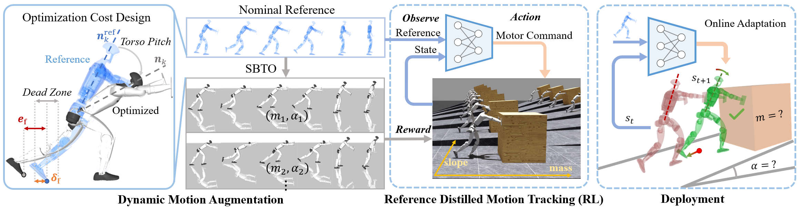
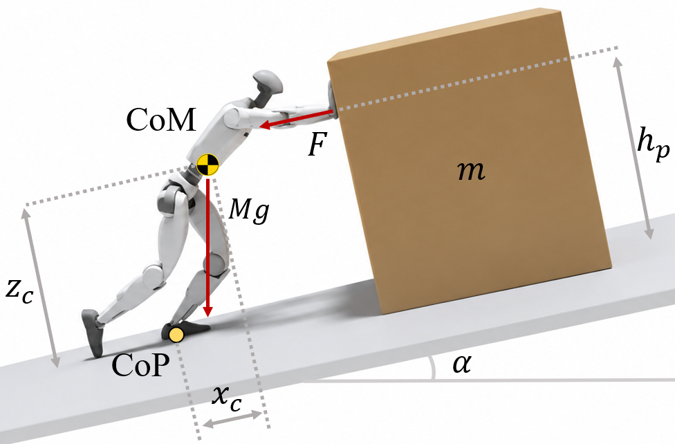
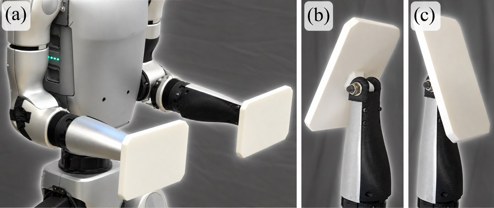

PushMimic enables a humanoid to push boxes of unknown mass up ramps of unknown inclination, adapting an effort-saving posture on the fly, all learned from a single human demonstration.
Which pose would you choose, and how would that change if the box were heavier or the ramp were steeper than expected?
Try it. The robot below runs live in your browser. Switch between the two presets, or move the sliders yourself. Watch how its posture changes relative to ramp inclinations and box masses.
With steeper ramps and heavier boxes, the robot pitches its torso further forward and places its feet further back, leaning its weight towards the box instead of pushing harder with its arms. All postures come from one policy that observes only a single level-ground human reference and adapts to different box masses and ramp inclinations online.
Over box masses up to 15 kg and ramps up to 18°, PushMimic succeeds in 93.0% of the pushes in simulation. Leaning instead of pushing harder results in 25% less thermal loss and 14% lower arm torque.

PushMimic starts from a single reference motion of a human pushing a box on level ground. Dynamic motion augmentation turns it into dynamically feasible references over a grid of box masses and ramp inclinations. Reference distilled motion tracking then distills all of them into one motion tracking policy in a single stage of training. At deployment, the policy adapts its posture without knowing the box mass or the ramp inclination.
The human reference only shows how to push on level ground. Sampling-based trajectory optimization (SBTO) adapts it to box masses from 5 to 15 kg and ramp inclinations from 0° to 18°, producing 209 dynamically feasible references. Two cost terms guide the posture change while the rest of the motion stays close to the reference.

Balancing the moments about the center of pressure (CoP) of the feet in a planar quasi-static model gives the uphill offset of the center of mass (CoM) from it,
$$x_c = \frac{m}{M}\, h_p \left(\tan\alpha + \mu\right) + z_c \tan\alpha.$$
It grows with both the box mass \(m\) and the ramp inclination \(\alpha\). The torso pitch prior therefore pitches the reference torso forward by
$$\phi(m, \alpha) = \alpha \left[\lambda (m - m_0) + 1\right],$$
and the dead zone penalizes the foot position error \(\mathbf{e}_\mathrm{f}\) only beyond the band \(\boldsymbol{\delta}_\mathrm{f}\),
$$c_\mathrm{foot} = w_\mathrm{f} \left\| \max\left(|\mathbf{e}_\mathrm{f}| - \boldsymbol{\delta}_\mathrm{f}, \mathbf{0}\right) \right\|^2.$$
\(M\): robot mass, \(\mu\): box friction, \(h_p\), \(z_c\): heights of the hands and the CoM, \(m_0\): nominal box mass, \(\lambda\): mass coefficient.
One policy is trained on the whole dataset at once. It observes only the nominal reference, which is the same for every box mass and ramp inclination, while its reward tracks the augmented reference of the environment it is pushing in. Since the box mass and the ramp inclination are never observed, the policy learns to infer them from how the box responds to the push and to adapt its posture accordingly.

(a) Flat hands, and the hinge at its (b) upper and (c) lower limits.
The hands of the physical Unitree G1 are replaced by flat plates with passively damped hinges, which keep face contact with the box as the torso leans. The policy transfers to the real robot and pushes a 6 kg, 1 m tall box.
Pushing a 6 kg box on level ground.
Pushing a 6 kg box up a 4° slope.
@article{zhuang2026pushmimic,
author = {Yulun Zhuang and Hanyu Zhang and Jingyu Liu and Yanran Ding},
title = {PushMimic: Learning Adaptive Humanoid Box Pushing via Dynamic Motion Augmentation and Reference Distillation},
journal = {arXiv preprint arXiv:TODO},
year = {2026},
}